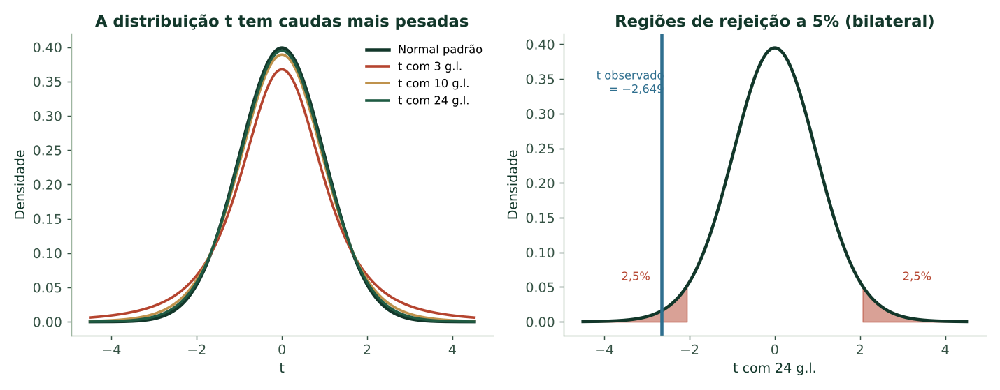
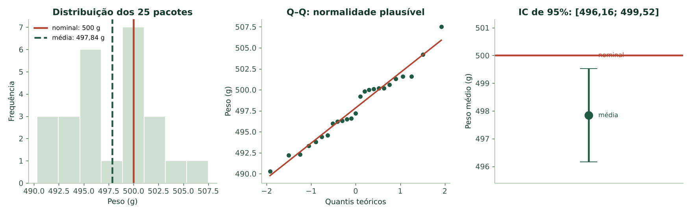

Teste t para uma amostra
Verifica se a média de uma população difere de um valor de referência definido previamente.
Comece por aqui
O pacote diz 500 g. Uma amostra de 25 unidades tem peso médio de 497,8 g. Isso é um desvio real do processo ou apenas a variação esperada de uma amostra? O teste t para uma amostra responde exatamente a essa pergunta: compara a média observada com um valor de referência fixado antes da coleta, levando em conta a variabilidade dos dados e o tamanho da amostra.
A distribuição t foi deduzida por William Sealy Gosset em 1908, enquanto trabalhava na cervejaria Guinness, em Dublin. Como a empresa proibia publicações dos funcionários, ele assinou o artigo com o pseudônimo Student — e o teste carrega esse nome até hoje.
O que é o teste
A média de uma amostra varia de amostra para amostra. Se soubéssemos o desvio-padrão da população, poderíamos usar a distribuição normal para medir essa variação. Como ele também é estimado dos dados, há uma incerteza extra, e a distribuição de referência passa a ser a t de Student, com caudas mais pesadas. Quanto menor a amostra, mais pesadas elas são.

Pressupostos e como verificá-los
| Pressuposto | Por que importa | Como verificar |
|---|---|---|
| Amostra aleatória da população de interesse | Sem isso, nenhuma inferência é válida. | Plano de amostragem. |
| Observações independentes | É o pressuposto mais grave quando violado. | Delineamento; medidas repetidas da mesma unidade exigem o teste t pareado. |
| Normalidade da população (ou n grande) | Define a distribuição de referência. | Shapiro–Wilk e gráfico Q–Q. Pelo teorema central do limite, com n acima de 30 a 40 o teste é robusto a desvios moderados. |
| Variável quantitativa | O teste compara médias. | Natureza da variável. |
| Valor de referência definido a priori | Escolher μ₀ depois de ver os dados invalida o valor-p. | Registre a origem do valor (norma, especificação, histórico). |
| Ausência de valores extremos influentes | A média e o desvio-padrão são sensíveis a eles. | Boxplot; repita o teste com e sem o ponto suspeito. |
Hipóteses e estatística de teste
Em que:
- \(\bar x\)
- média amostral
- \(\mu_0\)
- valor de referência, fixado antes da coleta
- \(\mu\)
- média populacional (parâmetro de interesse)
- \(s\)
- desvio-padrão amostral (divisor \(n-1\))
- \(n\)
- tamanho da amostra
- \(s/\sqrt n\)
- erro-padrão da média: a incerteza da média, não dos dados
- \(d\)
- d de Cohen: tamanho do efeito, em desvios-padrão
Exemplo numérico, passo a passo
Dados do exemplo: \(n=25\), \(\bar x=497{,}84\) g, \(s=4{,}0776\) g e \(\mu_0=500\) g.
| Passo | Cálculo | Resultado |
|---|---|---|
| Erro-padrão da média | 4,0776 / √25 | 0,8155 g |
| Estatística de teste | (497,84 − 500) / 0,8155 | t = −2,6486 |
| Graus de liberdade | 25 − 1 | 24 |
| Valor-p bilateral | 2 × P(t₍₂₄₎ ≤ −2,6486) | 0,0141 |
| Valor crítico | t(0,975; 24) | 2,0639 |
| Intervalo de confiança | 497,84 ± 2,0639 × 0,8155 | [496,16; 499,52] |
| Tamanho do efeito | (497,84 − 500) / 4,0776 | d = −0,53 |
\(|t|=2{,}649>2{,}064\), e o valor-p de 0,0141 é menor que 0,05: rejeita-se \(H_0\).
O intervalo de confiança conta a mesma história de forma mais útil: o peso médio do lote está entre 496,2 g e 499,5 g, e os 500 g nominais ficam de fora. A melhor estimativa do desvio é de 2,16 g, com margem de erro de 1,68 g.
Propriedades
- O teste bilateral rejeita \(H_0\) exatamente quando \(\mu_0\) fica fora do intervalo de confiança: teste e intervalo são duas leituras do mesmo cálculo.
- O intervalo é mais informativo que o valor-p, porque indica a magnitude plausível do desvio.
- A estatística não muda se somarmos uma constante a todos os valores e a \(\mu_0\); e não muda se multiplicarmos tudo por uma constante positiva.
- Com \(n\) grande, a distribuição t converge para a normal padrão.
- O valor-p unilateral é a metade do bilateral quando a diferença observada está no sentido da hipótese alternativa.
- O poder cresce com \(n\), com a diferença real e com a precisão do processo.
Como interpretar os resultados
| Elemento | O que informa | Cuidado |
|---|---|---|
| Valor-p | Evidência contra o valor de referência. | Não mede a magnitude do desvio nem a probabilidade de H₀. |
| Intervalo de confiança | Faixa de valores plausíveis para a média. | É a informação mais útil para decidir na prática. |
| d de Cohen | Magnitude do desvio em desvios-padrão. | 0,2 pequeno; 0,5 médio; 0,8 grande (COHEN, 1988). |
| Poder | Capacidade do teste de detectar o efeito. | Baixo poder explica não rejeições pouco informativas. |
| n grande e p pequeno | Pode detectar desvios irrelevantes. | Avalie se a diferença importa na prática. |
Reporte sempre: n, média, desvio-padrão, t, graus de liberdade, valor-p, intervalo de confiança e tamanho do efeito. Por exemplo: “n = 25; média de 497,8 g (DP 4,1); t(24) = −2,65; p = 0,014; IC 95% [496,2; 499,5]; d = −0,53”.
Como executar no R e em Python
Onde executar o código em Python
Não é preciso instalar nada: o Google Colab é um computador na nuvem, gratuito, que executa Python pelo navegador e já traz as bibliotecas usadas aqui (numpy, scipy e matplotlib).
t.test() pertence ao pacote stats, já instalado com o R. O valor de referência vai em mu=, e alternative= aceita "two.sided" (padrão), "less" ou "greater". O nível de confiança é ajustado em conf.level=.
t.test(peso, mu = 500) # bilateral
t.test(peso, mu = 500, alternative = "less") # unilateral
Exemplo de aplicação
Contexto dos dados
Um lote de pacotes declara peso líquido de 500 g. Para verificar a conformidade, 25 pacotes foram pesados. A pergunta é se o lote atende à especificação ou se há um desvio sistemático do processo de envase. Os dados são fictícios, criados para esta ficha.
Código em R
# Teste t para uma amostra: exemplo completo ----
# Pacote: apenas o stats (já vem com o R).
# 1. Dados: peso líquido de 25 pacotes (g). Valor nominal: 500 g (dados fictícios)
peso <- c(492.2, 493.3, 500.6, 490.3, 499.8, 499.2, 501.3, 496.2, 500.0, 492.3,
501.6, 500.2, 496.3, 497.2, 493.8, 500.1, 494.6, 504.2, 494.4, 496.0,
501.6, 496.6, 500.2, 507.5, 496.5)
mu0 <- 500
c(n = length(peso), media = mean(peso), dp = sd(peso), mediana = median(peso))
# 2. Diagnóstico gráfico, antes do teste
par(mfrow = c(1, 2))
hist(peso, col = "gray85", xlab = "Peso (g)", main = ""); abline(v = mu0, col = "red", lwd = 2)
qqnorm(peso, pch = 19); qqline(peso, col = "red", lwd = 2)
par(mfrow = c(1, 1))
# 3. Pressuposto de normalidade
shapiro.test(peso)
# 4. Teste t bilateral
t.test(peso, mu = mu0)
# 5. Cálculo manual
n <- length(peso); ep <- sd(peso) / sqrt(n)
t <- (mean(peso) - mu0) / ep
c(erro_padrao = ep, t = t, gl = n - 1, valor_p = 2 * pt(abs(t), n - 1, lower.tail = FALSE))
# 6. Versão unilateral: o interesse é saber se o peso está ABAIXO do nominal
t.test(peso, mu = mu0, alternative = "less")
# 7. Tamanho do efeito e poder
d <- (mean(peso) - mu0) / sd(peso)
d
# install.packages("pwr")
# pwr::pwr.t.test(n = n, d = d, sig.level = 0.05, type = "one.sample")
# 8. Alternativas não paramétricas
wilcox.test(peso, mu = mu0)
binom.test(sum(peso < mu0), sum(peso != mu0)) # teste do sinal
A mesma análise em Python, com os resultados
Cole o código em um notebook do Google Colab ↗ e execute com Shift+Enter. Os valores abaixo são a saída desse código.
# Bibliotecas: numpy, scipy e matplotlib (já instaladas no Google Colab)
import numpy as np
from scipy import stats
import matplotlib.pyplot as plt
# Dados: peso líquido de 25 pacotes de um lote (g). Valor nominal declarado: 500 g (dados fictícios)
peso = np.array([492.2, 493.3, 500.6, 490.3, 499.8, 499.2, 501.3, 496.2, 500.0, 492.3,
501.6, 500.2, 496.3, 497.2, 493.8, 500.1, 494.6, 504.2, 494.4, 496.0,
501.6, 496.6, 500.2, 507.5, 496.5])
mu0 = 500.0
n = len(peso); media = peso.mean(); dp = peso.std(ddof=1)
print(f"n = {n} | média = {media:.4f} g | desvio-padrão = {dp:.4f} g | mediana = {np.median(peso):.1f} g")
print(f"Mínimo = {peso.min()} | máximo = {peso.max()}")
# 1. Erro-padrão e estatística de teste
ep = dp / np.sqrt(n)
t = (media - mu0) / ep
gl = n - 1
p_bilateral = 2 * stats.t.sf(abs(t), gl)
print(f"\nErro-padrão da média = {dp:.4f} / raiz({n}) = {ep:.4f}")
print(f"t = ({media:.4f} - {mu0}) / {ep:.4f} = {t:.4f} com {gl} gl")
print(f"Valor-p bilateral = {p_bilateral:.5f} | unilateral à esquerda = {stats.t.cdf(t, gl):.5f}")
# 2. Conferência com a função pronta
print("scipy.stats.ttest_1samp:", stats.ttest_1samp(peso, mu0))
# 3. Intervalo de confiança de 95% para a média
tc = stats.t.ppf(0.975, gl)
ic = media + np.array([-1, 1]) * tc * ep
print(f"\nValor crítico t(0,975; {gl}) = {tc:.4f}")
print(f"IC 95% = {media:.4f} +/- {tc:.4f} x {ep:.4f} = [{ic[0]:.4f}; {ic[1]:.4f}]")
print(f"O valor nominal de {mu0} g está dentro do intervalo? {'sim' if ic[0] <= mu0 <= ic[1] else 'não'}")
# 4. Tamanho do efeito (d de Cohen) e diferença média
print(f"\nDiferença média = {media - mu0:.4f} g | d de Cohen = {(media - mu0) / dp:.4f}")
# 5. Pressuposto de normalidade
W, pw = stats.shapiro(peso)
print(f"\nShapiro-Wilk: W = {W:.4f}, p-valor = {pw:.4f}")
# 6. Alternativas não paramétricas, para comparação
print("Wilcoxon (posto sinalizado):", stats.wilcoxon(peso - mu0).pvalue.round(5))
abaixo = int(np.sum(peso < mu0)); acima = int(np.sum(peso > mu0))
p_sinal = min(1.0, 2 * stats.binom.cdf(min(abaixo, acima), abaixo + acima, 0.5))
print(f"Teste do sinal: {abaixo} pesos abaixo de 500 g e {acima} acima | p-valor = {p_sinal:.5f}")
# 7. Poder do teste para a diferença observada
delta = abs(media - mu0) / dp * np.sqrt(n)
poder = stats.nct.sf(tc, gl, delta) + stats.nct.cdf(-tc, gl, delta)
print(f"\nPoder do teste para o efeito observado (alfa = 0,05): {poder:.4f}")
n_nec = 1
while True:
d_ = abs(media - mu0) / dp * np.sqrt(n_nec); tc_ = stats.t.ppf(0.975, n_nec - 1)
if n_nec > 2 and stats.nct.sf(tc_, n_nec - 1, d_) + stats.nct.cdf(-tc_, n_nec - 1, d_) >= 0.80: break
n_nec += 1
print(f"n necessário para poder de 80% com esse tamanho de efeito: {n_nec}")
# 8. Gráficos
fig, ax = plt.subplots(1, 3, figsize=(13, 4))
ax[0].hist(peso, bins=8, color="lightgray", edgecolor="white")
ax[0].axvline(mu0, color="red", lw=2); ax[0].axvline(media, color="darkgreen", lw=2, ls="--")
ax[0].set_xlabel("Peso (g)"); ax[0].set_ylabel("Frequência")
stats.probplot(peso, dist="norm", plot=ax[1]); ax[1].set_title("Gráfico Q-Q")
ax[2].errorbar([0], [media], yerr=tc * ep, fmt="o", capsize=8)
ax[2].axhline(mu0, color="red", lw=2); ax[2].set_xlim(-1, 1); ax[2].set_xticks([])
ax[2].set_ylabel("Peso médio (g)")
plt.show()
Resultados da execução
n = 25 | média = 497.8400 g | desvio-padrão = 4.0776 g | mediana = 497.2 g Mínimo = 490.3 | máximo = 507.5 Erro-padrão da média = 4.0776 / raiz(25) = 0.8155 t = (497.8400 - 500.0) / 0.8155 = -2.6486 com 24 gl Valor-p bilateral = 0.01406 | unilateral à esquerda = 0.00703 scipy.stats.ttest_1samp: TtestResult(statistic=np.float64(-2.648629186534573), pvalue=np.float64(0.014064106306839658), df=np.int64(24)) Valor crítico t(0,975; 24) = 2.0639 IC 95% = 497.8400 +/- 2.0639 x 0.8155 = [496.1569; 499.5231] O valor nominal de 500.0 g está dentro do intervalo? não Diferença média = -2.1600 g | d de Cohen = -0.5297 Shapiro-Wilk: W = 0.9725, p-valor = 0.7081 Wilcoxon (posto sinalizado): 0.02777 Teste do sinal: 15 pesos abaixo de 500 g e 9 acima | p-valor = 0.30746 Poder do teste para o efeito observado (alfa = 0,05): 0.7196 n necessário para poder de 80% com esse tamanho de efeito: 30

| Elemento | Valor | Leitura |
|---|---|---|
| n / média / desvio-padrão | 25 / 497,84 g / 4,078 g | |
| Erro-padrão da média | 0,8155 g | |
| t (24 g.l.) | −2,6486 | Valor-p bilateral = 0,0141. |
| Valor-p unilateral (μ < 500) | 0,0070 | Se o interesse for só o desvio para baixo. |
| IC 95% para a média | [496,16; 499,52] g | Não contém 500 g. |
| Diferença média | −2,16 g | d de Cohen = −0,53 (efeito médio). |
| Shapiro–Wilk | W = 0,973; p = 0,708 | Sem evidência contra a normalidade. |
| Wilcoxon | p = 0,0278 | Mesma conclusão. |
| Teste do sinal | 15 abaixo e 9 acima; p = 0,307 | Bem menos potente: descarta a magnitude. |
| Poder observado | 0,720 | Para detectar d = 0,53 com n = 25. |
| n para poder de 80% | 30 | Com esse mesmo tamanho de efeito. |
Leitura: há evidência de que o peso médio do lote está abaixo do nominal. O desvio estimado é de 2,16 g, com intervalo de confiança entre 0,48 g e 3,84 g abaixo dos 500 g — um desvio pequeno em termos relativos (cerca de 0,4%), mas sistemático. A decisão prática depende da tolerância do processo e da legislação metrológica aplicável, não apenas do valor-p.
Vale observar a diferença entre as três abordagens. O teste t (p = 0,014) usa a magnitude de cada desvio; o Wilcoxon (p = 0,028) usa apenas a ordem; o teste do sinal (p = 0,307) usa somente quantos pacotes ficaram abaixo de 500 g e, por descartar tanta informação, não detecta nada. Quando a normalidade é plausível, como aqui, o teste t é o mais potente dos três.
Erros comuns
| Erro | Como evitar |
|---|---|
| Escolher μ₀ depois de ver os dados | O valor de referência vem da especificação, não da amostra. |
| Decidir entre bilateral e unilateral pelo resultado | A direção precisa ser definida antes da coleta. |
| Testar a normalidade da amostra e usar isso como porteiro | Veja a discussão na ficha de Shapiro–Wilk; decida pelo desenho e pelo gráfico. |
| Aplicar a medidas repetidas da mesma unidade | Use o teste t pareado. |
| Reportar só o valor-p | O intervalo de confiança é mais útil para a decisão. |
| Confundir desvio-padrão com erro-padrão | O erro-padrão é s dividido pela raiz de n. |
| Concluir que o processo está conforme porque p > 0,05 | Ausência de evidência não é evidência de ausência; avalie o poder. |
Alternativas e fluxo de trabalho
| Procedimento | Quando preferir |
|---|---|
| Wilcoxon (posto sinalizado) | Assimetria forte ou valores extremos; compara a mediana (ou a distribuição). |
| Teste do sinal | Apenas a ordem em relação a μ₀ é confiável; muito pouco potente. |
| Bootstrap da média | Amostra pequena e distribuição desconhecida. |
| Teste t aparado (Yuen de uma amostra) | Caudas pesadas, mantendo o foco na parte central. |
| Testes de equivalência (TOST) | O objetivo é demonstrar conformidade, e não diferença. |
| Teste t de duas amostras | A comparação é entre dois grupos, e não com um valor fixo. |
- Defina μ₀, a direção da hipótese e o nível de significância antes de coletar.
- Examine histograma, boxplot e Q–Q.
- Aplique o teste e, sobretudo, calcule o intervalo de confiança.
- Reporte o tamanho do efeito.
- Traduza o resultado para a escala do problema.
Referências desta ficha
- STUDENT [GOSSET, William Sealy]. The probable error of a mean. Biometrika, v. 6, n. 1, p. 1-25, 1908.
- MORETTIN, Pedro Alberto; BUSSAB, Wilton de Oliveira. Estatística básica. 9. ed. São Paulo: Saraiva, 2017.
- COHEN, Jacob. Statistical power analysis for the behavioral sciences. 2. ed. Hillsdale: Lawrence Erlbaum, 1988.
- MONTGOMERY, Douglas C. Design and analysis of experiments. 10. ed. Hoboken: Wiley, 2019.
- CASELLA, George; BERGER, Roger L. Statistical inference. 2. ed. Pacific Grove: Duxbury, 2002.
- CHAMPELY, Stephane. pwr: basic functions for power analysis. R package. Disponível em: https://CRAN.R-project.org/package=pwr.
- R CORE TEAM. R: a language and environment for statistical computing. Vienna: R Foundation for Statistical Computing, 2026. Disponível em: https://www.r-project.org/. (Função
t.test, pacotestats.) - POSIT TEAM. RStudio: integrated development environment for R. Boston: Posit Software, PBC. Disponível em: https://posit.co/download/rstudio-desktop/.
- VIRTANEN, Pauli et al. SciPy 1.0: fundamental algorithms for scientific computing in Python. Nature Methods, v. 17, p. 261-272, 2020. DOI: 10.1038/s41592-019-0686-2. (Funções do módulo
scipy.stats.) - HARRIS, Charles R. et al. Array programming with NumPy. Nature, v. 585, p. 357-362, 2020. DOI: 10.1038/s41586-020-2649-2.
- HUNTER, John D. Matplotlib: a 2D graphics environment. Computing in Science & Engineering, v. 9, n. 3, p. 90-95, 2007.
- GOOGLE. Google Colaboratory. Disponível em: https://colab.research.google.com/.
- Os dados do exemplo são fictícios e foram criados pelo autor. As figuras desta ficha foram elaboradas pelo autor.

Prof. Dr. Cássius Henrique Xavier Oliveira
Professor · ICTIN/UFLA · Estatística, Confiabilidade e Ciência de Dados.
Conheça minha trajetória e projetos →